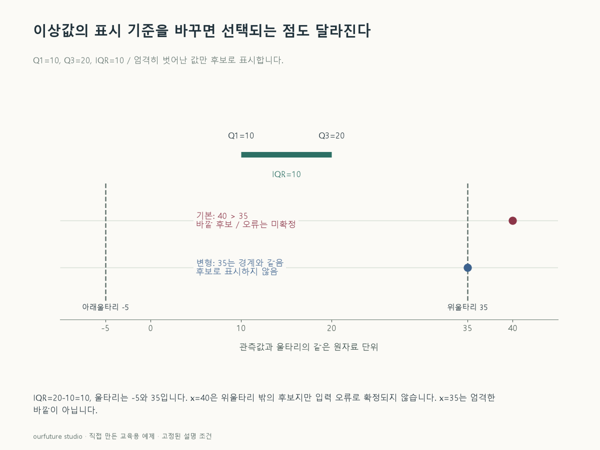

핵심 이론
상자그림의 한 가지 관례는 Q1−1.5×IQR보다 작거나 Q3+1.5×IQR보다 큰 관측값을 잠재적 이상값으로 표시하는 것이다. IQR은 Q3−Q1이며 중간 절반의 산포를 기준으로 한다. 울타리는 관측값 그 자체가 아니라 표시를 결정하는 경계이고, 수염은 보통 울타리 안에서 가장 먼 관측값까지 이어진다.
표준점수는 평균에서 떨어진 거리를 표준편차로 나눈다. 평균·표준편차는 큰 값의 영향을 받을 수 있어 IQR 기준과 다른 점을 고를 수 있다. 여러 변수의 조합에서는 각 열만 보면 평범한 점도 변수 사이 관계에서 드물 수 있다. 단변량 규칙을 통과했다는 사실은 다변량 이상이 없다는 뜻이 아니다.
어떤 규칙을 쓰더라도 표시 결과와 오류 판정은 구분한다. 분포의 꼬리가 원래 긴 자료에 정규분포를 전제로 한 검사를 기계적으로 적용하면 실제 관측을 과도하게 의심할 수 있다. 아래 예제는 주어진 사분위수와 1.5×IQR 관례만의 계산이다. 다른 프로그램의 기본 사분위수·경계 규칙과 결과를 비교하려면 그 정의를 맞춰야 한다.
작은 예제로 확인하기
Q1=10, Q3=20을 계산이 끝난 요약값으로 주었다.
| IQR | 아래 울타리 | 위 울타리 | 관측값 |
|---|---|---|---|
| 10 | −5 | 35 | 40 |
40은 35보다 크므로 이 관례에서는 후보로 표시된다. 오류인지에 관한 자료는 주어지지 않았다.
그림으로 확인하기

직접 고르기
Q1=10, Q3=20. 1.5×IQR 울타리를 엄격히 벗어난 값만 후보로 표시한다. 관측값은 40이다.
맞는 판단은?
- 1. IQR은 30이다
- 2. 40은 울타리 안이다
- 3. 40은 입력 오류로 확정된다
- 4. 40은 위 울타리 밖의 후보지만 오류는 미확정이다
정답과 오답의 이유 확인하기
정답 4번 — 40은 위 울타리 밖의 후보지만 오류는 미확정이다
IQR=10, 위 울타리=20+15=35다. 40은 밖이지만 그 원인은 알 수 없다.
- ① IQR은 합이 아니라 Q3−Q1=10이다.
- ② 40은 위 울타리 35보다 크다.
- ③ 표시 규칙은 입력 오류의 원인을 입증하지 않는다.
조건 하나 바꾸어 풀기
나머지 조건을 유지하고 관측값만 35로 바꾸면 후보인가?
풀이: 아니다.
문제는 울타리를 엄격히 벗어난 값만 고른다고 했으므로 경계와 같은 35는 포함하지 않는다.
다시 떠올릴 단서
경계 계산과 오류 판단은 두 단계다.
근거와 적용 조건
- NIST: Box Plot — Definition・outlier box plots. 확인일 2026-10-30.
- NIST: Detection of Outliers — Introduction・Labeling, Accommodation, Identification. 확인일 2026-10-30.
상황·수치·보기·조건 변경은 자체 교육 예제다. 민간 복원 문항의 공식 정답이나 실제 성능·학습 효과를 뜻하지 않는다.
읽은 내용을 적용해 보기
이미 계산된 사분위수를 받는다. 사분위수 추정법·실제 수염·오류의 원인을 계산하지 않는다.